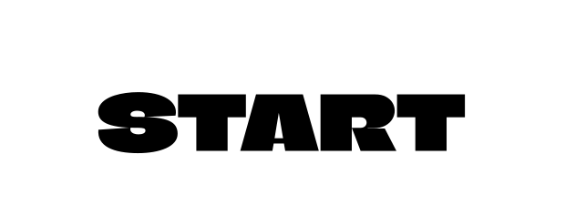
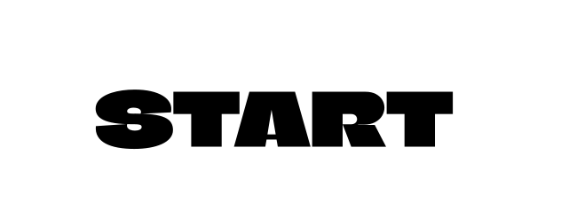

SPIL


Jeg startede med at reflektere over, hvad der gør et spil godt. Derefter brugte jeg kryds-metoden til at generere 10 idéer til et handlingsforløb i vores spil.
ANALYSE AF STIL
I designprocessen, valgte jeg at bruge Jade Browns stil som inspiration. Denne stil er kendetegnet ved stærke farver, kontraster, fed tekst, asymmetriske figurer og atmosfæriske baggrunde.
SKITSER


I skitsefasen visualiserede jeg handlingsforløbet for spillet samt identificerede de skærme og assets, jeg ønskede at bruge i spillet..
ASSETS


UI - ELEMENTER


 

MOCK UP


I temaet UX udviklede jeg en t-shirt webshop ved hjælp af forskellige metoder og analyser. I vores UX-research anvendte jeg desk-research, observations-research, en survey og five act interview. Derudover udarbejdede jeg moodboard, styletile og prototype som en del af vores designproces.
LYDE
Dårlig lyd
God lyd
I temaet UX udviklede jeg en t-shirt webshop ved hjælp af forskellige metoder og analyser. I vores UX-research anvendte jeg desk-research, observations-research, en survey og five act interview. Derudover udarbejdede jeg moodboard, styletile og prototype som en del af vores designproces.
AKTIVITETSDIAGRAM
I temaet UX udviklede jeg en t-shirt webshop ved hjælp af forskellige metoder og analyser. I vores UX-research anvendte jeg desk-research, observations-research, en survey og five act interview. Derudover udarbejdede jeg moodboard, styletile og prototype som en del af vores designproces.
STATEMACHINEDIAGRAM

I temaet UX udviklede jeg en t-shirt webshop ved hjælp af forskellige metoder og analyser. I vores UX-research anvendte jeg desk-research, observations-research, en survey og five act interview. Derudover udarbejdede jeg moodboard, styletile og prototype som en del af vores designproces.